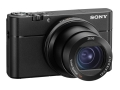
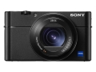
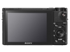

器材库 > 不可换镜头数码相机 > DSC-RX100 V

规格总览
发布日期
2016-10-06
厂家推荐价格
7,499.00 （人民币）
影像规格
影像传感器
Exmor RS CMOS
影像传感器尺寸
1英寸
有效像素
2010万
短片尺寸
4K
镜头和对焦
焦距
8.8mm-25.7mm
等效35mm画幅焦距
24mm-70mm
最大光圈
f/1.8-2.8
曝光控制
连拍
24张/秒
闪光灯
内置闪光灯
弹出式
取景规格
取景器
电子取景器
取景器像素
235万
文件输入/输出
无线功能
Wi-Fi, NFC
外观
颜色
黑色
尺寸
101.6×58.1×41mm
重量
299g
该产品暂无存档的网友点评
产品图 / 样片
DSC-RX100 V

DSC-RX100 V

DSC-RX100 V
评测 / 相关文章
- 详细内容 （存档）
- 掌中快枪手 索尼黑卡RX100V相机评测 （存档）
- ［资讯］DP公布2016年度相机获奖结果 （存档）
- ［行情］高性能随身 索尼黑卡5代降价 （存档）
- ［行情］索尼黑卡RX100 V国内上市 （存档）
- ［试用］索尼黑卡RX100 V数码相机实拍样张 （存档）
- ［资讯］索尼黑卡RX100V真机图赏 （存档）
- ［资讯］索尼A6500和RX100V上手试 （存档）
相关文章
- ［试用］索尼黑卡RX100V定格冰与火的时光 （原站已下线）
- ［资讯］DP公布2016年度相机获奖结果 （存档）
- ［行情］高性能随身 索尼黑卡5代降价 （存档）
- ［行情］索尼黑卡RX100 V国内上市 （存档）
- ［试用］索尼黑卡RX100 V数码相机实拍样张 （存档）
- ［试用］掌中快枪手 索尼黑卡RX100V相机评测 （存档）
- ［资讯］索尼黑卡RX100V真机图赏 （存档）
- ［资讯］索尼A6500和RX100V上手试 （存档）
- ［资讯］24张/秒连拍 索尼发布RX100 V数码相机 （存档）